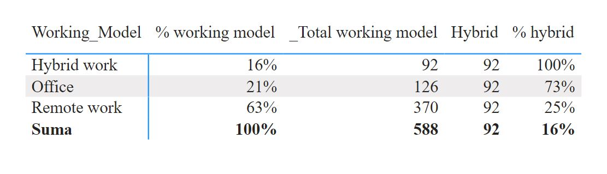

DAX queries with description
Information how many rows we have for particaular working model and to use this in future for count queries:
_Total working model = COUNTROWS(DS_salaries)
Calculated how many percent particular working model has by total working models. Calculated to check if I calculated other queries properly:
% working model = DIVIDE( [_Total working model], CALCULATE( [_Total working model], ALLSELECTED(DS_salaries[Working_Model] ) ) )
Calculated how many hybrid working model are for working models. I did the same query for remote and office work:
Hybrid = CALCULATE( [_Total working model], DS_salaries[Working_Model] = "Hybrid work" )
Calculated percent hybrid working model from total working model. I did the same query for remote and office work:
% hybrid = DIVIDE( [Hybrid], [_Total working model], 0 )
Below result of all above DAX calculations for hybrid model:
